Published: 2023-04-14
Source link: https://www.cnphotos.net/academy/show-131.html
Photograph the same person in similar light and at the same place, and every photographer gets a different result. Portrait photography aims to capture the subject's features and personality, but it also gives the photographer a creative way to express themselves. A skilled eye, and a masterful use of light, pose, and background, can turn an ordinary snapshot into a remarkable portrait.
Taking portraits is not hard, but sometimes you fall into creative ruts and need fresh inspiration. Here are 10 portrait ideas that may help you.
1. Use a reflective object as a foreground element
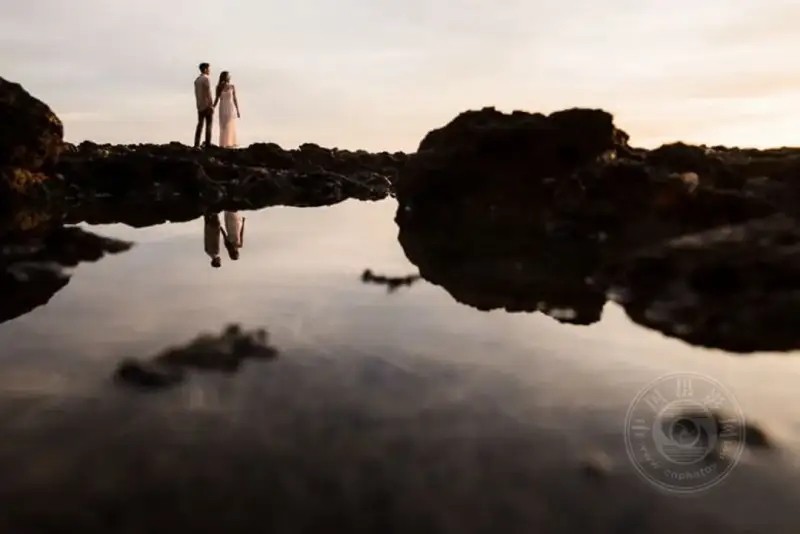
One of the fastest ways to add visual interest to a portrait is to give the photo depth, and you do that by adding a foreground element. Photographers often use plants and trees, walls or railings, and reflective surfaces such as water, windows, or even a phone. A railing also creates a leading line. The benefit of a reflective foreground is that it can hide areas you do not want to show, such as a messy floor or a dull, empty space.
2. Find interesting backgrounds in everyday life
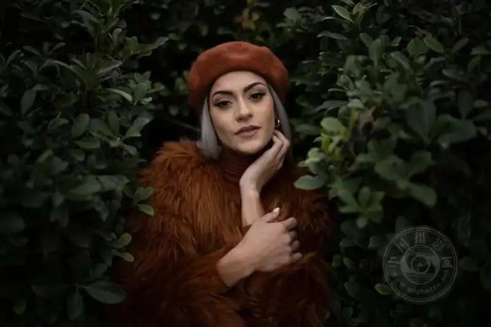
When you shoot a portrait outdoors, it is easy to be limited by the scenery, especially when the location is less than ideal. But with a little scouting and creative thinking, you can change the background and make the most of a spot that would otherwise disappoint.
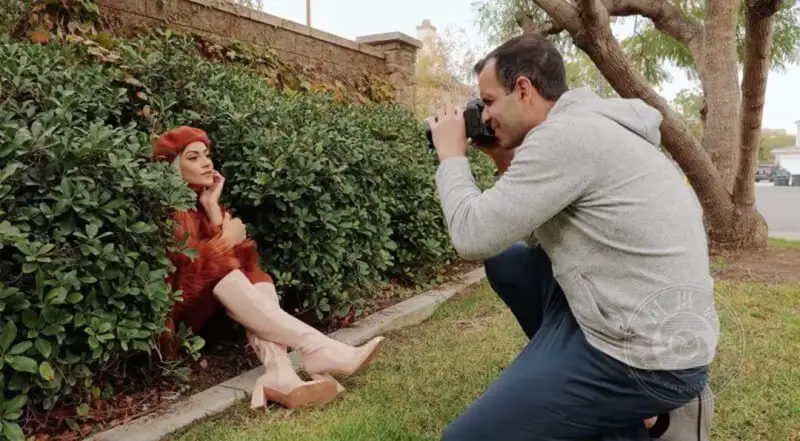
Once you know what to look for, even a cluttered spot can look great. One way to fight a busy background is to find a patterned, even area that draws focus to the subject. In the example above, the photographer placed the subject in front of a hedge. The depth and repeating pattern of the hedge let us focus on the portrait.
3. Consider color when you choose the background
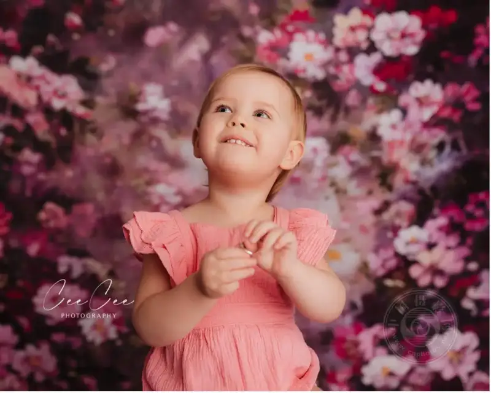
Color strongly affects the visual appeal of an image. You can use color theory, such as complementary colors, to create bold contrast. Or, the opposite, you can use a monochrome palette made of different tones of a single color. In the example above, the beautiful floral background links in color with the little girl's dress.
4. Bring thematic elements into the photo
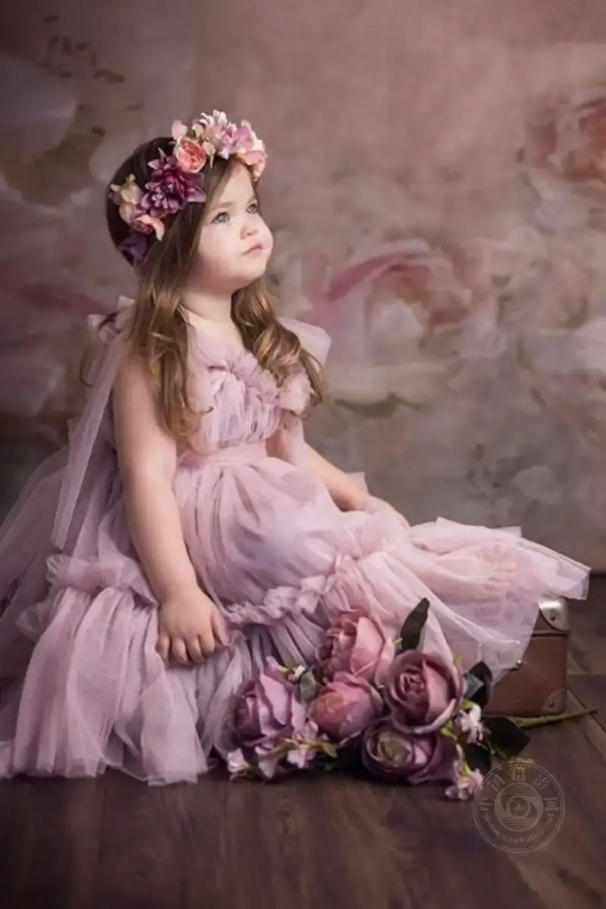
With a floral art background, you can arrange elements in the scene that relate to the background image. For example, you can easily add a rug, some plates or cups and saucers, or a vase. This adds creativity to the portrait and echoes the background further.
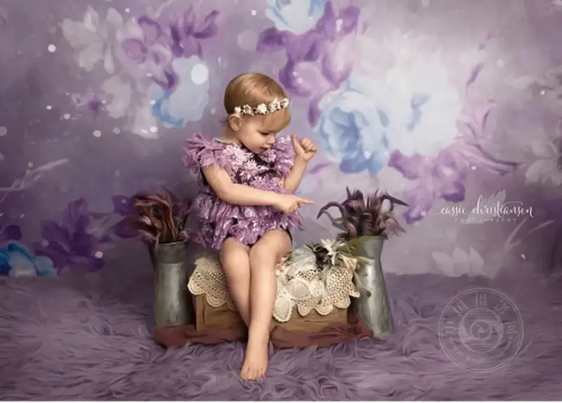
Here is another example, in the image above. You can see how to add thematic elements that support the background, tie the scene together, and raise the quality of the photo.
5. Change your point of view
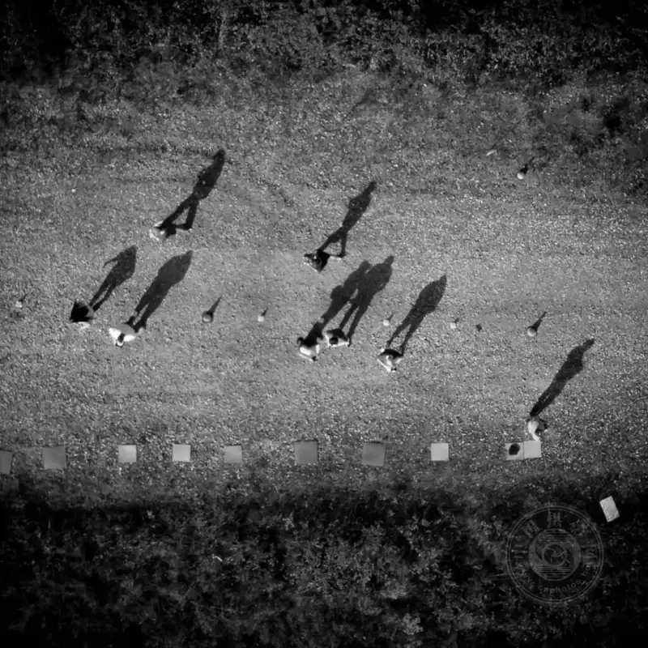
We are used to seeing the world at eye level. To add creativity to your portraits, change your viewpoint. Lower the camera, or shoot from above, and you can even try a drone. A simple shift of angle turns a flat image into a dynamic one. It lets you have fun with poses and makes the image more lively.
6. Slow the shutter to show motion
Slowing the shutter speed is a great way to practice creative portrait photography. You use a slower shutter to show movement in the photo. For this technique, I recommend using a tripod.
In the photo above, the subject is in a dark room. An assistant spins a set of string lights around for two seconds, the time the shutter is open, while the subject stays completely still. Aside from the string lights, the room has almost no ambient light.
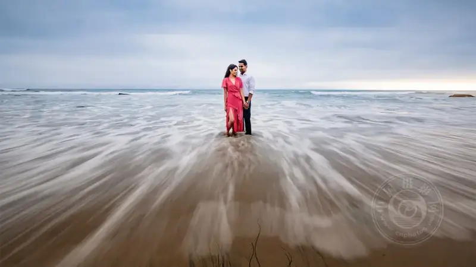
In this next photo, the photographer used a tripod and a slow shutter to smooth the water on the beach. If the sun is out, or the ambient light is too bright for a slow enough shutter to catch motion, use an ND filter to cut the ambient light.
7. Add a ring of fire
Everyone loves a little lens flare. Whether it comes from light leaking through a camera defect or from golden-hour sun, flare adds a lot of visual interest to a photo. Many photographers even add flare in post when there is none.
You can also add a halo in-camera. This fun technique for adding a visual glow to a portrait is called a ring of fire. Do not worry, you do not need real fire for it. You only need a short piece of copper or bronze tube, 3 to 5 centimeters long and about 4 centimeters in diameter, to create a highlight reflection.
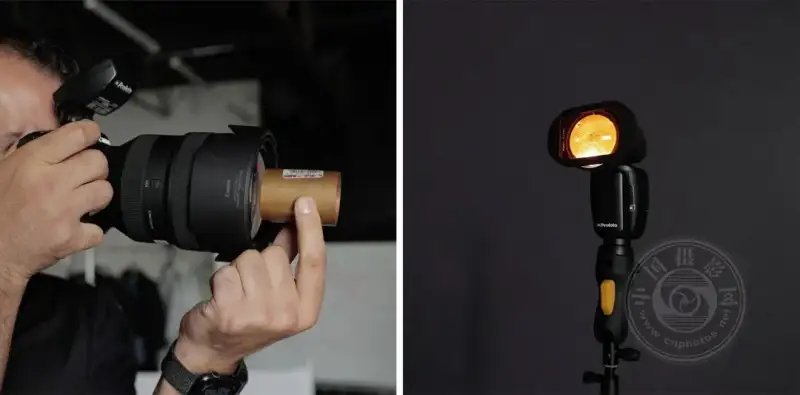
Just hold the copper tube up to your camera lens, and place the subject between you and the light source. The light source can be the sun aimed at the camera, or a flash. Have your subject block the light so it does not make your lens too hazy. Shoot wide open on a wide-angle lens, 24mm to 35mm, to add more glow. Make sure your hands are not in the shot when you hold the tube in front of the lens.
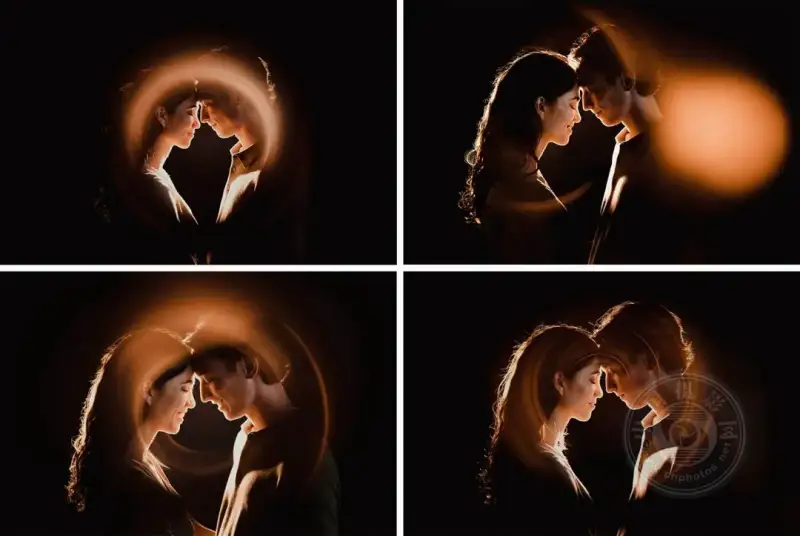
With the right angle, focal length, aperture, and light power, you get a beautiful ring in the frame.
If it does not work at first, do not be discouraged. This technique takes some practice to get right.
8. Open your aperture to blur the background
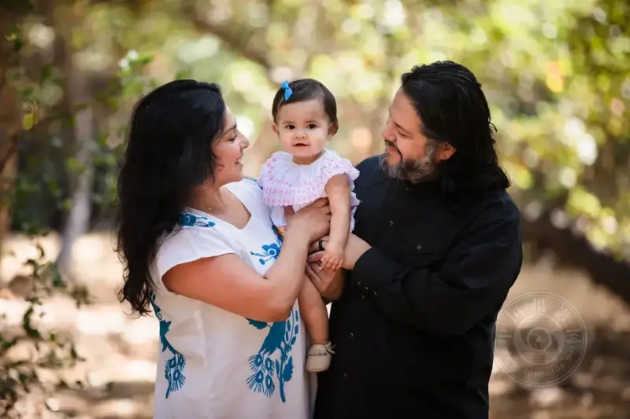
Like a good glow, everyone loves a creamy blurred background. It adds a cinematic feel to your portrait and separates the subject from the background. When you blur the background, consider three factors:
Distance between the camera and the subject:The closer you are to the subject, and the farther the subject is from the background, the more blurred the background becomes. Try different distances between you and the subject, and between the subject and the background.
Aperture:The wider the aperture, the softer the background. So shoot with a wide aperture, or move closer to the subject, for a smoother background.
Focal length:Longer focal lengths also affect depth of field. They help compress the background and create better bokeh.
9. Stitch a panorama
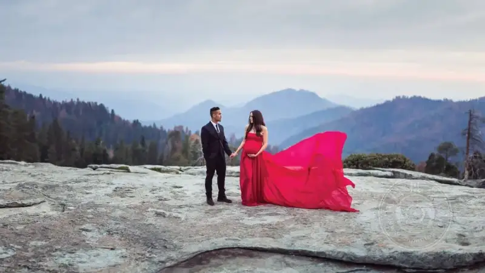
When it comes to wide-angle portraits, we usually expect a few things. First, the photographer often uses a smaller aperture to catch more environmental detail. Also, because we usually shoot wide photos with a wide-angle lens, we do not want too much lens compression as the background recedes to the horizon. So we can use panorama stitching to create a surreal portrait that combines the shallow depth of field of a portrait with a wide environmental landscape.
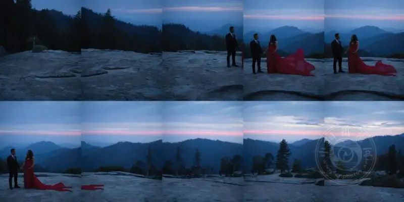
Try this method with the following steps:
▪ Use a longer focal length, 85mm or longer.
▪ Turn off autofocus.
▪ Shoot in manual mode to keep all frames consistent in the final image.
▪ Use a wide aperture, f/2.8 or wider.
▪ Take several photos, each overlapping the last by at least 30%. Start with a frame that highlights your subject, so they are in sharp focus, then shoot the other frames from left to right. See the example above.
▪ Combine the images in Lightroom or another panorama-stitching program. Do your detailed edits after you stitch the images together.
10. Combine multiple compositional techniques
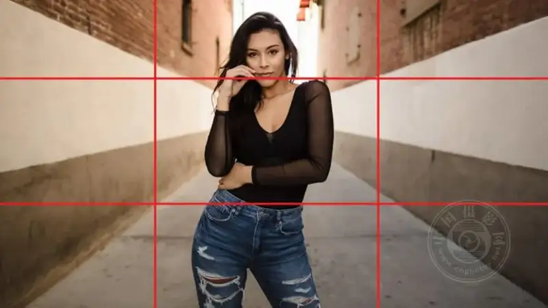
The compositional techniques that give us better photos are not used alone. You can combine several, such as symmetry, leading lines, and the rule of thirds, to create a better photo than if you stick to only one.